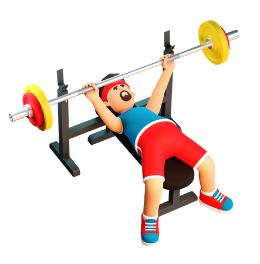
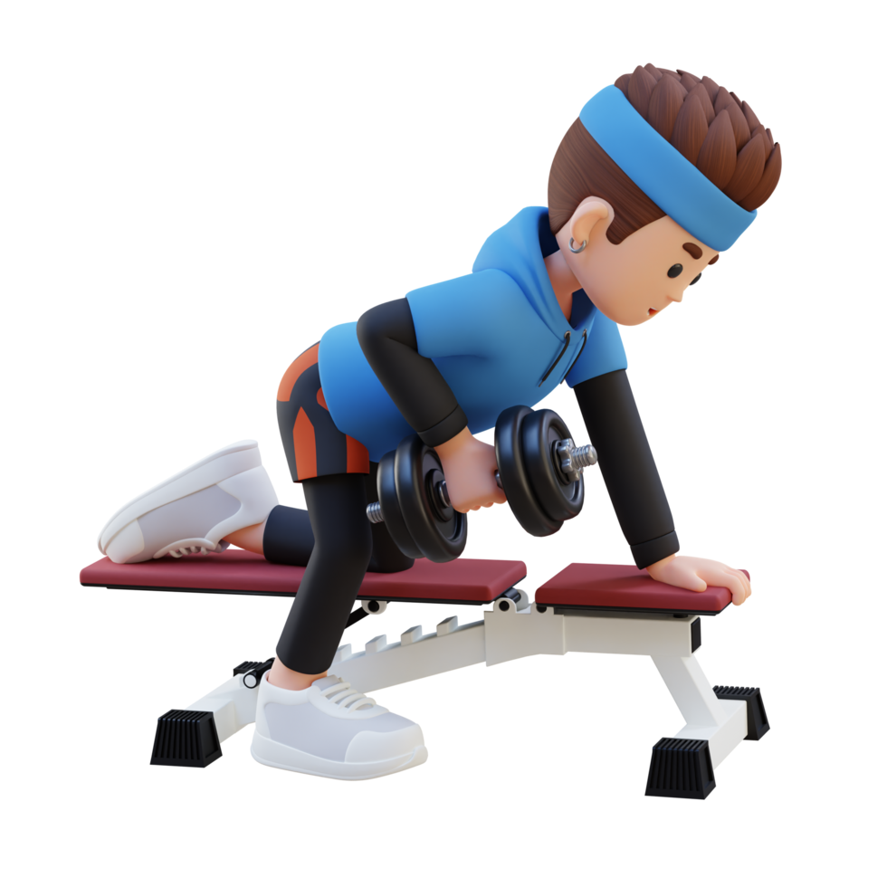
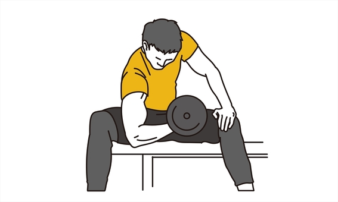
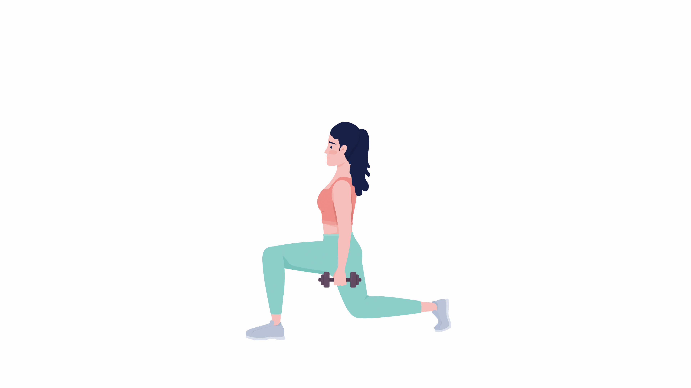

Choose Your Gym Location

Basic Fit Purmerend

Basic Fit Amsterdam

Basic Fit Rotterdam

Basic Fit Utrecht

Basic Fit Eindhoven
Selected Gym Opening Hours:
Have You Checked Out Our Recipes?
Fuel your Workouts with meals designed for peak Performance!